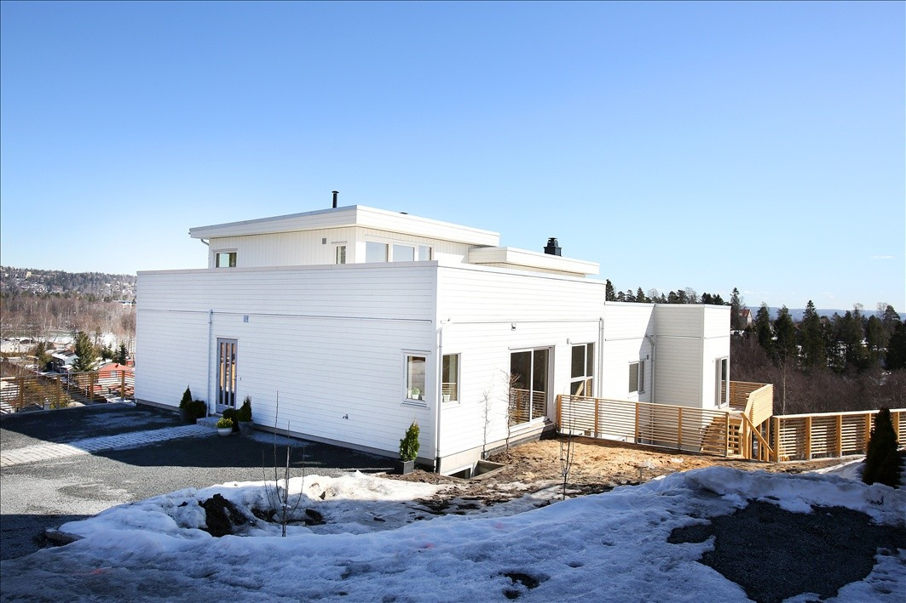

Byggrådgiver og byggherreombud i Bærum
For deg som skal pusse opp, bygge på eller bygge nytt.
Noen på din side når du bygger i Bærum
Skal du pusse opp, bygge på eller bygge nytt i Bærum, møter du entreprenører som har gjort dette mange ganger før. Vi sørger for at du også har noen på din side som kjenner byggherrerollen: beskrivelsene, tilbudene, kontrakten, byggeplassen og overtakelsen.
Vi har vært byggherre på egne prosjekter i over 15 år, og mange av dem ligger på Stabekk og Jar. Der har vi bygget eneboliger, tomannsboliger og rekkehus, og totalrehabilitert eldre eneboliger med nye fasader, vinduer, gulv, kjøkken og bad.
Dette hjelper vi med
- Før du velger entreprenør: en beskrivelse som ikke overlater viktige ting til tilfeldighetene, og innhenting og vurdering av tilbud.
- Oppussing og tilbygg: avklaring av søknadsplikt, behov for prosjektering og beskrivelse til håndverkerne.
- Under byggingen: oppfølging på byggeplass, kvalitet i utførelsen og fremdrift.
- Ved overtakelse: forberedelse og gjennomføring, så feil og mangler blir tatt opp før du overtar.
Du kan få hjelp med hele prosessen eller bare med deler av den. Se alle tjenestene.
Prosjektene våre i Bærum
- Nyveien 13, Stabekk: to tradisjonelle familieboliger, ferdig 2015, og totalrehabilitering av en enebolig på samme adresse.
- Lillengveien 7, Stabekk: to funkisboliger tegnet av arkitekt Søren Yran, ferdig 2011, og totalrehabilitering av eneboligen.
- Ringstabekkveien 78, Jar: tomannsbolig i funkisstil tegnet av Søren Yran, ferdig 2013, og totalrehabilitering av eneboligen.
- Vollsveien 129, Jar: tomannsbolig, ferdig 2010.
- Jarmyrveien 27–45, Jar: ti ene- og tomannsboliger og rekkehus med underjordisk parkering, Arkitektkontoret Niels Torp, ferdig 2009.
Bilder og flere prosjekter ligger under referanser.
Hvem vi er
Dag Badendyck har fagbrev som tømrer og er arkitekt og prosjektleder. Hans Krøvel har juridisk embetseksamen og er prosjektleder. Begge har jobbet med eiendomsutvikling siden 2010. Mer om oss.
Ta kontakt med oss
Send oss en e-post eller ring oss for en uforpliktende vurdering av ditt prosjekt.